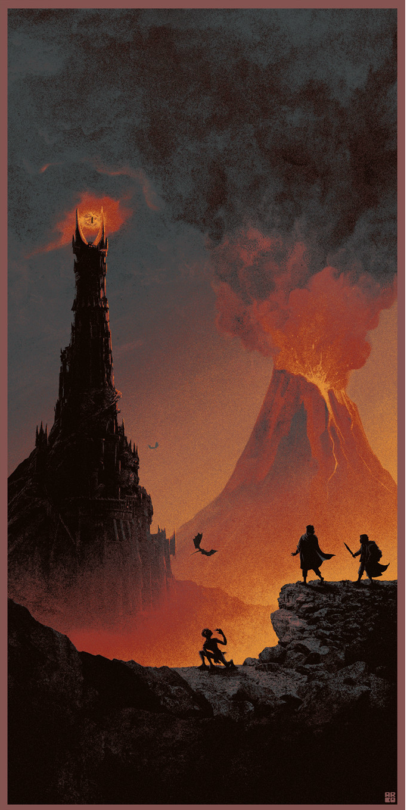

Here are some various fun facts and notes about Tolkien's world!

World creation can be a challenging endeavor for the writer of any story, especially when you must forge one from scratch.
Presenting a reader with interesting and fun content while also giving them the option to learn more on their own is a great way to have an engaged and invested audience.
Tolkien’s creativity in every aspect of his universe is mind-bogglingly wide and overall structurally sound, hence its diversity.
However, it is not only the width that draws his audience, for who would be interested in an ocean as shallow as a puddle?
His world is equally as deep as it is wide, and this attention to detail is what has lent longevity to Tolkien’s legendarium over the years.
Along with his current books, Tolkien had another, The Silmarillion.
It's one of the most detailed creation stories ever drafted in fantasy and basis for Tolkien’s world.
The reason this book is both loved and obscure at the same time is that it's not required reading.
Anyone can read a Tolkien book and have a rough idea of what's going on in that independent story.
However, if you have read his previous material it enhances the literary experience into one which is seldom felt.
Tolkien's stories build upon one another while remaining true to their individual stories and that's a feat which so many writers only dream of.
Basically all of Tolkien's works are available at the library or online; I'd wholeheartedly encourage giving them a read if you have the time.